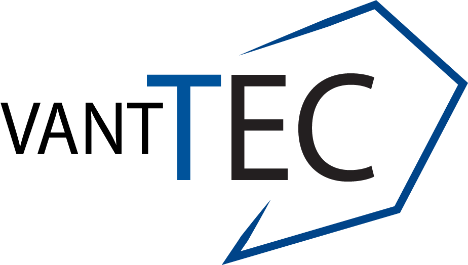
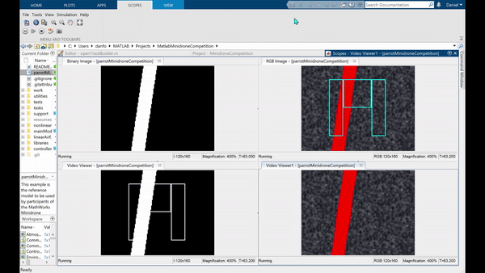

DESARROLLO DE PROTOTIPO DE SOFTWARE
Algoritmo seguidor de lineas para minidron usando vision computacional

A través del uso de la suite de herramientas de Simulink y MATLAB, se está desarrollando actualmente un algoritmo que, a través de una máquina de estados y visión computacional, ayuda a un minidron Parrot Mambo tomar desiciones sobre cómo moverse dentro de una ruta definida en el piso y cuándo aterrizar al final de ésta.



Contacto
Daniel Noé Salinas Sánchez A01704062@tec.mx 461 251 3937 Pamela Morales Martinez A01571059@tec.mx 52 1 81 1759 5523